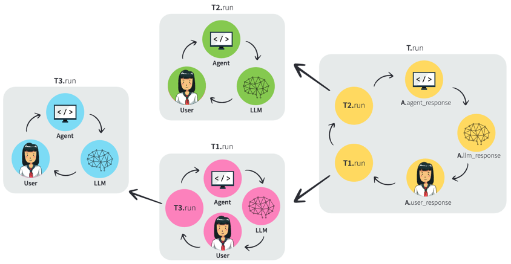

Overview of Langroid's Multi-Agent Architecture (prelim)
Agent, as an intelligent message transformer¶
A natural and convenient abstraction in designing a complex LLM-powered system is the notion of an agent that is instructed to be responsible for a specific aspect of the overall task. In terms of code, an Agent is essentially a class representing an intelligent entity that can respond to messages, i.e., an agent is simply a message transformer. An agent typically encapsulates an (interface to an) LLM, and may also be equipped with so-called tools (as described below) and external documents/data (e.g., via a vector database, as described below). Much like a team of humans, agents interact by exchanging messages, in a manner reminiscent of the actor framework in programming languages. An orchestration mechanism is needed to manage the flow of messages between agents, to ensure that progress is made towards completion of the task, and to handle the inevitable cases where an agent deviates from instructions. Langroid is founded on this multi-agent programming paradigm, where agents are first-class citizens, acting as message transformers, and communicate by exchanging messages.
To build useful applications with LLMs, we need to endow them with the ability to trigger actions (such as API calls, computations, database queries, etc) or send structured messages to other agents or downstream processes. Tools provide these capabilities, described next.
Tools, also known as functions¶
An LLM is essentially a text transformer; i.e., in response to some input text, it produces a text response. Free-form text responses are ideal when we want to generate a description, answer, or summary for human consumption, or even a question for another agent to answer. However, in some cases, we would like the responses to be more structured, for example to trigger external actions (such as an API call, code execution, or a database query), or for unambiguous/deterministic handling by a downstream process or another agent. In such cases, we would instruct the LLM to produce a structured output, typically in JSON format, with various pre-specified fields, such as code, an SQL query, parameters of an API call, and so on. These structured responses have come to be known as tools, and the LLM is said to use a tool when it produces a structured response corresponding to a specific tool. To elicit a tool response from an LLM, it needs to be instructed on the expected tool format and the conditions under which it should use the tool. To actually use a tool emitted by an LLM, a tool handler method must be defined as well. The tool handler for a given tool is triggered when it is recognized in the LLM's response.
Tool Use: Example¶
As a simple example, a SQL query tool can be specified as a JSON structure with a sql
field (containing the SQL query) and a db field (containing the name of the database).
The LLM may be instructed with a system prompt of the form:
When the user asks a question about employees, use the SQLTool described in the below schema, and the results of this tool will be sent back to you, and you can use these to respond to the user's question, or correct your SQL query if there is a syntax error.
The tool handler would detect this specific tool in the LLM's response, parse this JSON structure,
extract the sql and db fields, run the query on the specified database,
and return the result if the query ran successfully, otherwise return an error message.
Depending on how the multi-agent system is organized, the query result or error message may be handled by the same agent
(i.e., its LLM), which may either summarize the results in narrative form, or revise the query if the error message
indicates a syntax error.
Agent-oriented programming: Function-Signatures¶
If we view an LLM as a function with signature string -> string,
it is possible to express the concept of an agent, tool, and other constructs
in terms of derived function signatures, as shown in the table below.
Adding tool (or function calling) capability to an LLM requires a parser (that recognizes
that the LLM has generated a tool) and a callback that performs arbitrary computation and returns a string.
The serialized instances of tools T correspond to a language L;
Since by assumption, the LLM is capable of producing outputs in \(L\),
this allows the LLM to express the intention to execute a Callback with arbitrary instances
of T. In the last row, we show how an Agent can be viewed as a function signature
involving its state S.
| Function Description | Function Signature |
|---|---|
| LLM | [Input Query] -> string [Input Query] is the original query. |
| Chat interface | [Message History] x [Input Query] -> string [Message History] consists of previous messages1. |
| Agent | [System Message] x [Message History] x [Input Query] -> string [System Message] is the system prompt. |
| Agent with tool | [System Message] x (string -> T) x (T -> string) x [Message History] x [Input Query] -> string |
Parser with type T |
string -> T |
Callback with type T |
T -> string |
General Agent with state type S |
S x [System Message] x (string -> T) x (S x T -> S x string) x [Message History] x [Input Query] -> S x string |
Multi-Agent Orchestration¶
An Agent's "Native" Responders¶
When building an LLM-based multi-agent system, an orchestration mechanism is critical to manage the flow of messages between agents, to ensure task progress, and handle inevitable LLM deviations from instructions. Langroid provides a simple yet versatile orchestration mechanism that seamlessly handles:
- user interaction,
- tool handling,
- sub-task delegation
We view an agent as a message transformer;
it may transform an incoming message using one of its three "native" responder methods, all of which have the same
function signature: string -> string. These methods are:
llm_responsereturns the LLM's response to the input message. Whenever this method is invoked, the agent updates its dialog history (typically consisting of alternating user and LLM messages).user_responseprompts the user for input and returns their response.agent_responseby default only handles atool message(i.e., one that contains an llm-generated structured response): it performs any requested actions, and returns the result as a string. Anagent_responsemethod can have other uses besides handling tool messages, such as handling scenarios where an LLM ``forgot'' to use a tool, or used a tool incorrectly, and so on.
To see why it is useful to have these responder methods, consider first a simple example of creating a basic chat loop
with the user. It is trivial to create such a loop by alternating between user_response and llm_response.
Now suppose we instruct the agent to either directly answer the user's question or perform a web-search. Then it is possible that
sometimes the llm_response will produce a "tool message", say WebSearchTool, which we would handle with the
agent_response method. This requires a slightly different, and more involved, way of iterating among the agent's
responder methods.
Tasks: Encapsulating Agent Orchestration¶
From a coding perspective, it is useful to hide the actual iteration logic by wrapping an Agent class
in a separate class, which we call a Task, which encapsulates all of the orchestration logic. Users of the Task class
can then define the agent, tools, and any sub-tasks, wrap the agent in a task object of class Task, and simply call
task.run(), letting the Task class deal with the details of orchestrating the agent's responder methods, determining
task completion, and invoking sub-tasks.
Responders in a Task: Agent's native responders and sub-tasks¶
The orchestration mechanism of a Task object works as follows. When a Task object is created from an agent, a
sequence of eligible responders is created, which includes the agent's three "native" responder agents in the sequence:
agent_response, llm_response, user_response.
The type signature of the task's run method is string -> string, just like the Agent's
native responder methods, and this is the key to seamless delegation of tasks to sub-tasks. A list of subtasks can be
added to a Task object via task.add_sub_tasks([t1, t2, ... ]), where [t1, t2, ...] are other
Task objects. The result of this is that the run method of each sub-task is appended to the sequence of eligible
responders in the parent task object.
Task Orchestration: Updating the Current Pending Message (CPM)¶
A task always maintains a current pending message (CPM), which is the latest message "awaiting" a valid response
from a responder, which updates the CPM.
At a high level the run method of a task attempts to repeatedly find a valid response to the
CPM, until the task is done. (Note that this paradigm is somewhat reminescent of a Blackboard architecture, where
agents take turns deciding whether they can update the shared message on the "blackboard".)
This is achieved by repeatedly invoking the step method, which represents a "turn" in the conversation.
The step method sequentially tries the eligible responders from the beginning of the eligible-responders list, until it
finds a valid response, defined as a non-null or terminating message (i.e. one that signals that the task is done). In
particular, this step() algorithm implies that a Task delegates (or "fails over") to a sub-task only if the task's
native responders have no valid response.
There are a few simple rules that govern how step works:
- a responder entity (either a sub-task or a native entity -- one of LLM, Agent, or User) cannot respond if it just responded in the previous step (this prevents a responder from "talking to itself".
- when a response signals that the task is done (via a
DoneToolor a "DONE" string) the task is ready to exit and return the CPM as the result of the task. - when an entity "in charge" of the task has a null response, the task is considered finished and ready to exit.
- if the response of an entity or subtask is a structured message containing a recipient field, then the specified recipient task or entity will be the only one eligible to respond at the next step.
Once a valid response is found in a step, the CPM is updated to this response, and the next step starts the search for a valid response from the beginning of the eligible responders list. When a response signals that the task is done, the run method returns the CPM as the result of the task. This is a highly simplified account of the orchestration mechanism, and the actual implementation is more involved.
The above simple design is surprising powerful and can support a wide variety of task structures, including trees and
DAGs. As a simple illustrative example, tool-handling has a natural implementation. The LLM is instructed to use a
certain JSON-structured message as a tool, and thus the llm_response method can produce a structured message, such
as an SQL query. This structured message is then handled by the agent_response method, and the resulting message updates the CPM. The
llm_response method then becomes eligible to respond again: for example if the agent's response contains an SQL
error, the LLM would retry its query, and if the agent's response consists of the query results, the LLM would
respond with a summary of the results.
The Figure below depicts the task orchestration and delegation mechanism,
showing how iteration among responder methods works when a Task T has sub-tasks [T1, T2] and T1 has a
sub-task T3.

-
Note that in reality, separator tokens are added to distinguish messages, and the messages are tagged with metadata indicating the sender, among other things. ↩